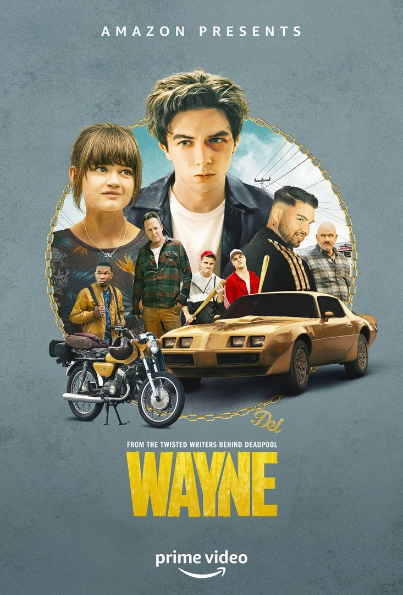

Wayne
-
Deskripsi Singkat: Serial aksi komedi tentang remaja pemberani yang berpetualang untuk mengambil kembali mobil ayahnya yang dicuri.
-
Aktor Pemeran Utama: Mark McKenna, Ciara Bravo, Joshua J. Williams
-
Pengarang Cerita: Shawn Simmons
Sutradara: Shawn Simmons
-
Rating:
-
Sinopsis: Wayne McCullough Jr. adalah remaja berusia 16 tahun yang memiliki hati baik meski sering bertingkah kasar. Setelah ayahnya meninggal dan mobil kesayangan ayahnya — sebuah Pontiac Trans Am ’79 — dicuri, Wayne memutuskan untuk mengejarnya dan mengambilnya kembali. Bersama Del, gadis yang ia sukai, mereka memulai perjalanan jauh penuh aksi, tantangan, dan kecerdikan untuk mendapatkan kembali apa yang menjadi milik Wayne sebelum semuanya terlambat.